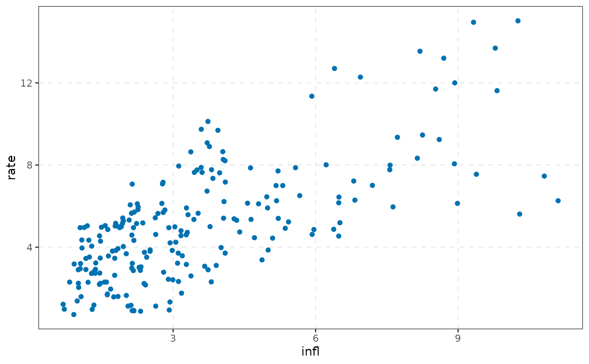

theme_varm() is the single theme used by every ggplot2::autoplot() method
in varm: black-and-white panel, dashed major grid, no strip background, legend at the bottom. varm_palette()
returns colours from the colour-blind safe Okabe-Ito palette.
Arguments
- base_size
base font size, passed to
ggplot2::theme_bw().- n
number of colours (at most 8; more are recycled with a warning).
Value
theme_varm(): a ggplot2::theme(); varm_palette(): a character
vector of hex colours.
See also
Other plotting:
autoplot.varm_draws(),
autoplot.varm_forecast(),
autoplot.varm_hd(),
autoplot.varm_irf()
Examples
varm_palette(3)
#> [1] "#0072B2" "#D55E00" "#009E73"
ggplot2::ggplot(yraw, ggplot2::aes(infl, rate)) +
ggplot2::geom_point(colour = varm_palette(1)) +
theme_varm()
